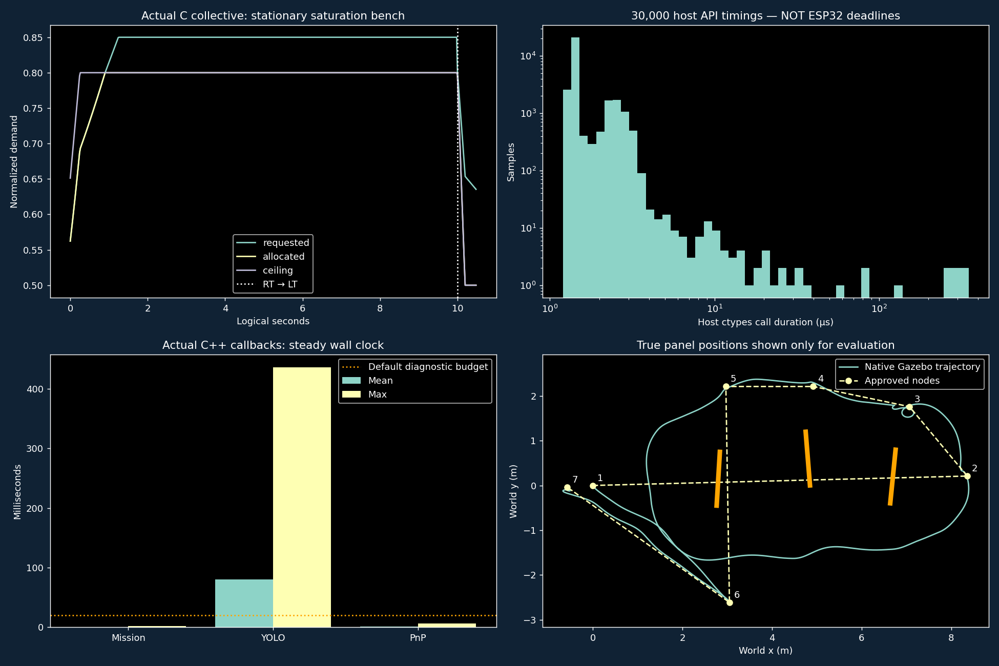

Actual C FC, native Gazebo 10.5/OGRE2 cameras and ROS2 C++ nodes. All original trials, including failures, remain saved.
Physical motor arming remains disabled. XY hold uses explicit perfect simulated localization. Known-size panel perception is not general monocular obstacle ranging. Host microseconds are not ESP32 timing guarantees.
28 C host checks · 20,000 malformed-packet trials · 30,000-step soak + 5,000 mixed-axis steps · 12 actual ROS2 fault checks · 63 QEMU checks.
Gentle is the boot default. Full RT permits at most 0.8 collective (1800 µs equivalent), with differential motor range retained for the PIDs. LT decreases climb and collective allowance. This is not an ESC driver.

YOLO's default 20 ms diagnostic-budget overruns are retained. Its wall-clock inference rate differs from 15 fps recording and from the 500 Hz FC control interval.
One PC route request, neutral pilot after mode selection; the onboard planner generates UART commands and the C FC generates motor demands. Zero panel contacts.
Predetermined raw Xbox-format input only; no ROS2 or feedback test pilot. Source hash matches the navigation and QEMU C source.
After 25 simulated seconds, the transport drops companion frames. The route does not complete and the FC marks commands stale. No fallback script completes the route.
All measured checks, parameters and hashes · Diagnostics and real-flight preparation guide · Original HID/UART · Original ROS2 profiles · Original onboard mission log · C control and diagnostic trace